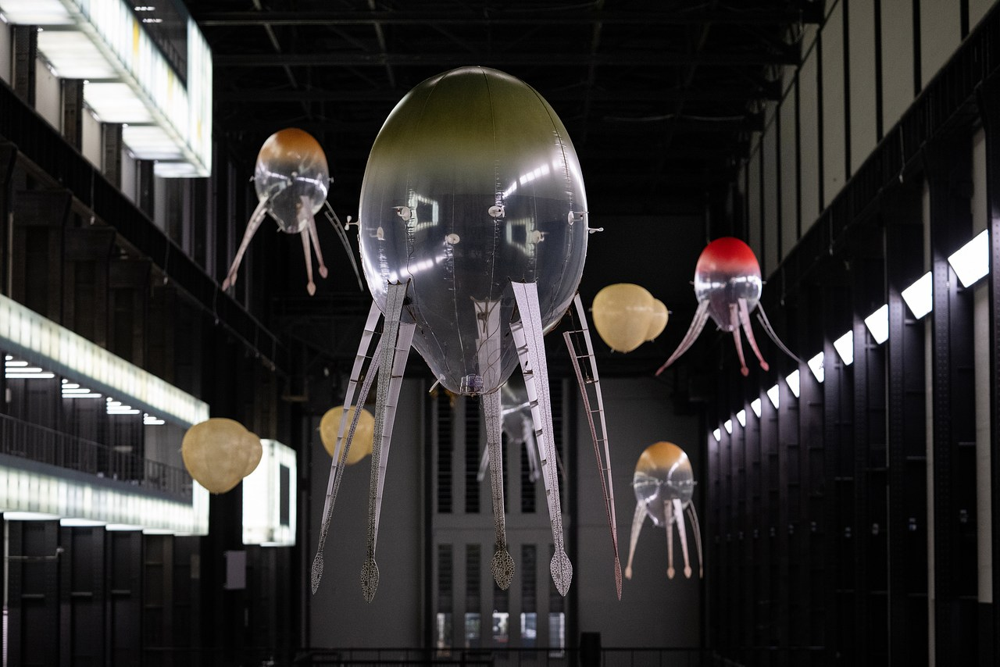

Art Work — Overview
At the end of the workshop, our group’s digital preservation project is Anicka Yi’s jellyfish installation work — “In Love with the World” exhibited at the Tate Gallery.

（Anicka Yi: In Love with the World at Tate Modern, 2021. (Source: Biswas, 2021, The Guardian).）
“In Love with the World” by Anicka Yi at Tate Gallery
This artwork combines digital and biological elements, creating an immersive experience that reflects the diversity of life. By suspending large jellyfish installations in the hall and allowing them to move freely according to algorithms, Anicka Yi blends the organic with the technological. The jellyfish, as biological entities, interact with the digital algorithms controlling their movement, embodying the fluidity and interconnectedness of life in a novel form (Yi, 2021).
This combination of biology and machine control significantly increases the complexity of preservation. The maintenance of the artwork is not solely about preserving its physical structure but also ensuring the longevity of the digital interfaces, codes, and programming languages that facilitate its interactive features. The preservation goal extends beyond physical upkeep to ensure that the interactive technologies continue to function in the future, allowing audiences to experience or understand how the installation operates long after its creation. This highlights the unique challenges posed by digital and interactive art forms, which require ongoing technological support to maintain their relevance and functionality over time (Yi, 2021).
One of the main preservation challenges of In Love with the World lies in its reliance on rapidly evolving technology, which is also a common problem faced in the GLAM (galleries, libraries, archives, and museums) field (Lynch, 2014; Carman, 2016). As technology rapidly advances, artworks that depend on specific digital systems or interfaces risk becoming obsolete, making long-term preservation more difficult (Graham, 2017). In this case, the work’s digital and biological components require ongoing attention to ensure both continue to function as intended over time (Baker et al., 2018).
According to Langley’s holistic digital management approach, preserving interactive digital works requires anticipating the outdated hardware and software, which requires adopting digital strategies of continuous adaptation and active maintenance. Virtualisation or simulation technology may provide a solution to make the digital interface still accessible when the software environment changes. However, preserving its physical components and the authenticity of its interaction in this digital ecosystem remains a challenge.
On this basis, we think that the detailed production drawings and operation instruction documents of the installation can be systematically preserved for reference when reconstructing the installation in the future. This method not only ensures the continuity of the digital interface but also provides the possibility of secondary production of physical and biological components, thus adding important guarantees for the long-term preservation of the work.
Bibliography
• Yi, A. (2021) In Love with the World, Tate Gallery. Available at: https://www.tate.org.uk/art/artworks/yi-in-love-with-the-world (Accessed: 12 January 2025).
• Baker, A., Cook, A. and Jones, M. (2018) ‘Digital preservation in galleries, libraries, archives, and museums’, Journal of Digital Preservation, 24(3), pp. 201-215.
• Carman, J. (2016) ‘The preservation of digital artworks: Challenges and strategies’, Museum Management and Curatorship, 31(2), pp. 153-167.
• Graham, B. (2017) ‘Technology and the future of digital art preservation’, Cultural Heritage Management Journal, 22(1), pp. 65-80.
• Lynch, C. (2014) ‘Digital preservation in museums: Challenges and strategies’, Museum International, 66(1), pp. 48-60.
• Biswas, S. (2021) ‘Anicka Yi: In Love with the World, Turbine Hall, Tate Modern – Hyundai Commission review’, The Guardian. Available at: https://www.theguardian.com/artanddesign/2021/oct/17/anicka-yi-in-love-with-the-world-turbine-hall-tate-modern-hyundai-commission-review-sutapa-biswas-lumen-review (Accessed: 12 January 2025).